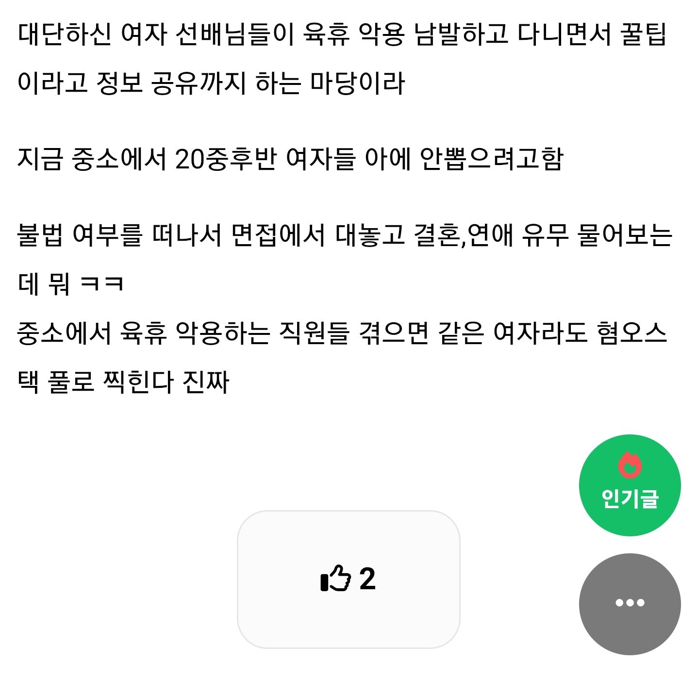
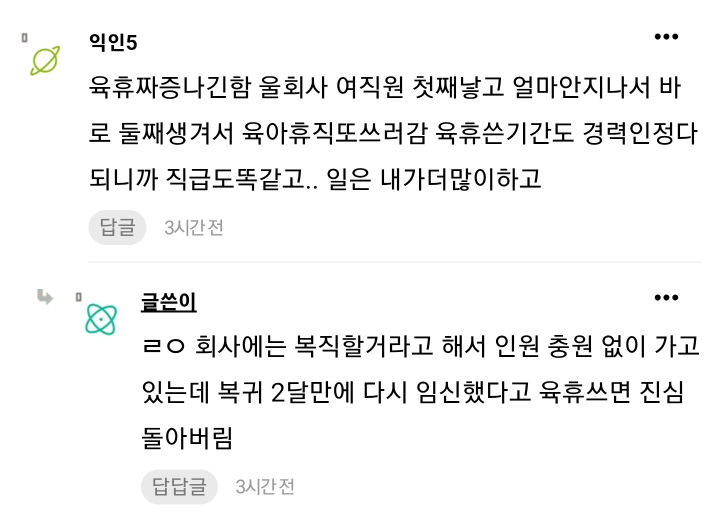
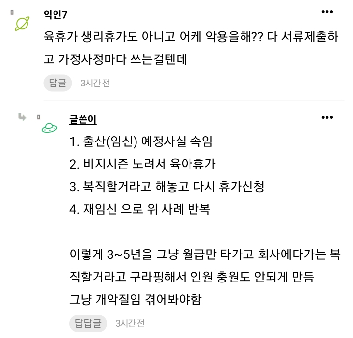
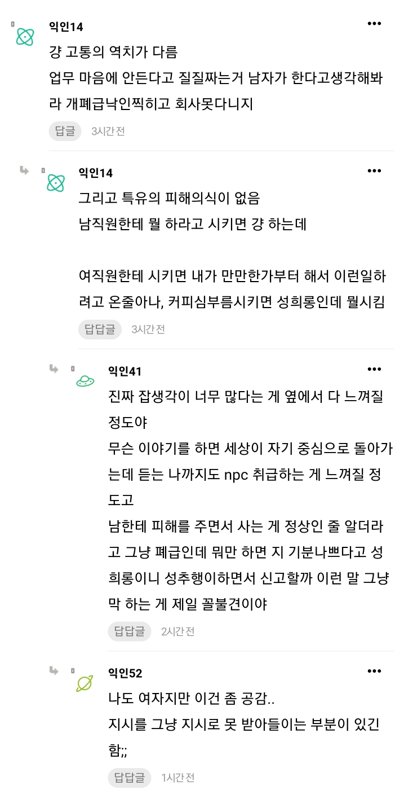

댓글을 보면 남자들은 부당한 일이라고 해도
그냥하는 케이스 많다
여자들은 힘들면 갑자기 울어버린다
육아휴직 악용하는 케이스 몇번 겪으면
여자직원 절대 안 뽑는다




댓글을 보면 남자들은 부당한 일이라고 해도
그냥하는 케이스 많다
여자들은 힘들면 갑자기 울어버린다
육아휴직 악용하는 케이스 몇번 겪으면
여자직원 절대 안 뽑는다
매출액 3조 중견 다녔는데, 우리 사업장에서도 비슷함 ㅋㅋ 여자 과장이 여자 뽑는걸 안좋아함

육휴남용도 이유 중 하나지만 보통 어느 직종, 어느 회사건 여직원은 못/안 시키는 일이 있는 게 큼
한녀
근데 임신해본 사람은 알텐데.. 임신이 그리 편한게 아님 ㅋㅋㅋㅋㅋ 입덧이랑 몸 무겁고 낳는것도 고통인데 ㅋㅋㅋㅋ 물론 신생아 육아도 회사다니는게 더 나을정도로 패턴 개야랄나지만.. 신생아도 200일 좀 지나면 육아가 훨씬 편해지긴함.. 암튼 비혼이 많아서 그렇지 임신이 쉬운것도 아니고 나름 큰 결심해야함 ㅋㅋㅋ 나가는 비용도 만만치는 않음. 산후조리원 싼곳이 4~500만원이고.. 일단 회사가 남직원을 선호하는건 일에 대한 책임감과 야근을 자발적으로 하는모습이지 ㅋㅋㅋㅋㅋ 여자도 책임감 있는 여직원들은 회사에서 잘 대우해주고 진급도 잘함
너 ai지?
뭔 개소리야? 날 왜 스카이넷으로 만드냐 ㅋㅋㅋㅋ
본문에서 계속 [악용] 이라는 표현을 사용하는데 도대체 악용의 기준이 무엇인지 궁금함.
해당 근로자가 법적으로 보장된 제도를 정해진 절차에 따라 이용했다면 무엇을 근거로 악용이라고 판단하는 거지?
회사가 계속 근무할 의사가 있는지 물었고근로자는 실제로 계속 일하고 싶은 마음이 있어서 그렇다고 답했을 수도 있음. 이후 다시 임신했다는 사실만으로 당시의 답변이 거짓이었다거나 처음부터 제도를 악용할 의도가 있었다고 단정할 수 있는 건가?
만약 육아휴직을 연속으로 사용하는 것 자체가 문제라면 그건 개인의 도덕성 문제가 아니라 그렇게 사용할 수 있도록 설계된 제도의 타당성을 따져야 할 문제 아닌가?
필요하다면 제도의 이용 횟수나 조건을 제한하는 방향으로 논의할 수도 있겠지.
하지만 현행 제도가 허용하는 범위에서 권리를 행사했다는 이유만으로 그 사람을 비난하는 건 별개의 문제임.
물론 합법적인 행위라고 해서 무조건 도덕적으로 정당한 것은 아님. 그러나 어떤 행위를 악용이라고 규정하려면 단순히 회사에 불리한 결과가 발생했다는 사실을 넘어 제도의 취지에 반하는 이용이나 기만적인 의도가 있었다는 합리적인 근거가 필요함.
꼭 이렇게 도덕성이 문제가 아니고 설계가 잘못됐다 이런 애들이 있음 ㅋㅋㅋ
쿠팡 30일이내 무료반품도 실제로 반품절차가 까다롭고 번거로워서 피해보는 소비자들을 위해서 만든건데
20일 실컷 쓰고 걸레만들어서 반품하는거 무한반복하면서,
그러면 제도를 그렇게 만들지 말았어야지!!
ㅋㅋ 지가 똑똑한 줄 암 ㅋㅋㅋ
난 도덕성이 상관없다고 한 적 없음.
[물론 합법적인 행위라고 해서 무조건 도덕적으로 정당한 것은 아님] 이렇게 써놨음.
내 말은 악용이라고 부르려면 제도 취지에 반하는 사용이나 기만 의도가 있었다는 근거가 있어야 한다는 거임.
쿠팡 예시는 오히려 내 말을 뒷받침함.
20일 쓰고 걸레로 만들어서 반품하는 건 반품 제도 취지에 정면으로 반하니까 악용 맞음.
근데 육아휴직 연속 사용은 애 키우는 데 쓰는 거라 취지대로 쓴 거임. 둘이 같은 구조가 아님.
그리고 쿠팡도 반품 남용 계정은 제한하는 식으로 제도를 손봤음.
문제가 반복되면 제도를 고치는 게 맞다는 거 내가 말한 그대로임.
[지가 똑똑한 줄 암]은 니 생각일 뿐이고 할 수 있는 게 인신공격이라는 건 알겠음.
그건 개인의 도덕성 문제가 아니라 그렇게 사용할 수 있도록 설계된 제도의 타당성을 따져야 할 문제 아닌가? 라고 니가 써놨네요 ㅋㅋㅋㅋ
자기가 말한것도 바로 까먹는 수준 ㅋㅋ
인신공격 했다 어쩔래? ㅋㅋㅋ 인신공격 못하게 제도를 손보세요 ㅋㅋㅋㅋ
븅신아 ㅋㅋㅋㅋㅋㅋ
도덕성문제는 무조건있는거라 좋은 도덕성을 바탕으로 만들면 그게설계미스지 뭐ㅋㅋ
회사에서 복귀 대해서 물어봤을때 한다고 얘기 후 다시 임신해서 육아휴직을 쓰면 그당사자는 거짓말이 아니더라도 동료나 회사 입장에서는 악의 또는 거짓말로 받아드리는게 정상이지
애초에 한자리가 비워있으면 그만큼 주변 동료들이 일은 나눠서 하게 될텐데 복귀하자마자 바로 또 쓰면 힘든부분이 계속 반복이 되는데 시선이 곱게 보일까?
차라리 그만둔다고 하면 본문내용대로 사람을 새로 구해서 빈자리를 채울 수라도 있는데
그리고 합리적인 근거가 필요하다고 얘기하는데 너가 생각하는 합리적인 근거는 뭐야 내가 본문내용 보기만해도 거짓말이랑 악의가 느껴지는데
동료들 부담 커지는 거 맞고 시선 곱지 않은 것도 이해함.
근데 그건 그렇게 느낀다는 거지 거짓말이었다는 근거는 아님.
피해 본 쪽이 악의로 받아들이는 거랑 실제로 악의가 있었던 건 별개임.
합리적인 근거가 뭐냐고 물었는데, 그 의도를 증명할 방법은 사실상 본인 자백이나 답변할 때 이미 임신 중이었다는 사실 정도밖에 없음.
[보기만해도 거짓말이랑 악의가 느껴지는데]는 근거가 아니라 인상임.
개인 의도는 확인이 안 되니까 그걸로는 못 거름.
그래서 제도의 한계라는 거고..
그리고 복지제도를 이용하면서 남한테 피해주면 악의가 맞고 복귀에 대한 부분을 더 진중하게 생각하고 회사에 얘기를 하는것도 맞다고 생각해 나는
복지제도는 원래 다른 사람한테 기대는 구조임.
육아휴직도 급여는 고용보험에서 나가고 빈자리는 동료가 메꿈.
누군가 부담을 안 지는 복지는 없음.
그러니까 [남한테 피해 주면 악의]라는 기준이면 복지를 쓰는 사람은 전부 악의가 됨.
피해가 생기는 건 제도 구조 때문이지 쓴 사람의 의도 때문이 아님.
복귀 문제를 진중하게 얘기해야 한다는 건 나도 동의함..
위 댓글 포함해서 같이 적으면 피해 본 쪽이 악의가 느껴진다고 해서 거짓말 또는 악의가 없었다는 말을 확정 짓으면 안되지 반대로 생각하면 육아휴직 쓰는 쪽에서 악의, 거짓말이 없다는 합리적인 근거가 없는것도 똑같음
그리고 [남한테 피해 주면 악의]라는 기준이면 복지를 쓰는 사람은 전부 악의가 됨.
이 부분에 대해서는 복귀를 한다고 얘기하고 ‘잠시 복귀하고 나서 또 육아휴직(복지제도)’ 를 쓰는 사람 기준으로 악용이 있다고 얘기하는거였어
원래 노예근성에 절여지면, 노예제도를 탓하는 게 아니라 내가 좋은 노예라는 걸 어필하려고 함.
회사는 그럼 왜 일을 할지 안할지 본인도 모르는 슈뢰딩거의 고양이 같은년을 위해 자리를 비워두고 계약직 뽑아다가 인수인계를 수없이 반복하면서 털바퀴년 자리를 보전해줘야함? 심지어 한두달도 아니고 몇년씩이나?
회사가 무슨 자원봉사단체인줄아나 ㅋㅋㅋㅋ 사장만 졷같은게 아니라 니년때문에 피해보는 직원들도 싫어해
엥?? 본문에 써있지않음????
제도를 이용하는 것. 그건 뭐라못하지.
근데 그 업무분야에서 일하다보면 언제가 바쁜시기고 언제가 한가한 시기라는건 파악하겠지??
그런데
1. 육휴라는 국가제도. 절대무적방패를 일부러 출산예정시기를 속이고 바쁜시기에 일부러 쓰는 행위.
2. 복직을 할꺼라고 말해놓고 육휴 다쓰고 난 후에 다시 휴가신청( 본인이 복직이라고 말했다면 추후에 임신계획이 없다는 것을 내포하는 말임. 현대사회에서 피임이라는 아주 훌륭한 계획이행수단이 있음)
3. 어찌어찌 복귀하면 곧바로 이직해버림 OR 반복
이건 제도의 취지에 반하는 이용이나 기만적인 의도가 아니라는 건가...???
묵묵하게 일잘하는 여자도 많은데 징징짜는년은 진짜 개 극혐.
고딩,대학시절에 도태찐따페미년들이 한남이라고 울부짖던 아버지가 벌어온돈으로 편하게 페미하다가 사회생활해보니깐 여적여되제~
회사일=내일 이라고 생각하는 자발적 노예가 여자들 중엔 드물어
옳고그름을떠나 조직입장에선 어떤쪽을 선호하겠나?
안낳은사람 꼴받게 해서 꼬우면 너도 낳아라가 핵심임 손해볼 기업과 직원들 까지 챙길 여력이 안되니 저렇게 나오는거
육휴가 어려운게 단기간을 가다보니
인원충원을 계약직으로 해야하고
원하는 인원을 못뽑고 육휴돌아오기를 기다리는데
육휴끝나고 또 임신하거나 이직하거나해서
직장동료들이 그냥 일을 1.2배정도 더해서 메꿔줘야함..
첨에야 좋게좋게하는데 몇번 겪으면 진저리나지
심지어 2명이그러면 남들은 풀야근인거임
육휴 3년씩 4번 쓰고 퇴사한 사람 있음
근데 4번이나 쓰니 대단하단 생각이 들더라
애 넷 낳았으면 애국자긴하네
ㅋㅋ ㅅㅂ 우리 와이프도 지금 저런 상황인디
첫째를 반년동안 준비해서 임신했는데
둘째가 설마 그렇게 쉽게 생길줄 알았냐고
애국하잖아 한잔해
이미 몸이 만들어져서 둘째 부터는 좀 쉽다고 하드라고 ㅋㅋㅋㅋㅋㅋㅋㅋㅋㅋㅋ
ㅋㅋㅋ 우리 회사만 그런게 아니네
나입사 할때 젊은 여직원 5명 있는데 1명 저런식으로 육휴 쓰다가 사장이 열받아서
임신 가능한 직원은 면접도 보지말라고 해서 다 아줌마들로 교체 함
어머님들이 꼼꼼하고 일도 잘 하심
그냥 일시키기가 존나 피곤함
같이 일해보면 여직원은 못하는거 안하는거 투성이임
무슨 부당한 지시 하는거 아닌 이상에야 시키면 하는건데 씨발 뭔 시키면안되는게 존나게많음 ㅋㅋ
사회적 책임을 다한 군필은 ㅈ만큼 대우해주면서 생리 임신 출산은 개인사인데도 의무적으로 지원해야됨
타이밍 맞춰서 딱딱 임신 할려면 적어도 노콘 노피임약 질펀야스를 존나 조져야 가능한건데, 복직하면서 임신 계획 있냐고 물었는데 없다고 한거면 기망이지 ㅋㅋㅋㅋ
울회사에서도 육휴콤보 2명 봤는데. 여자들도 개욕함.
사기업도 그렇지만 악용?혹은 활용 케이스는 학교 선생님이 최고던데... 방학기간엔 복직하고 학기중엔 휴직을 쪼개서 하면서
뭐 최대한 육휴쓰는 사람끼리만 같은 사무실에 묶어놓으면 될듯
육휴때문에 일본회사 시세이도가 개판남 지금 ㅋㅋ
화장품회사라 개씹여초회사인데
육휴때문에 결원이 많아지고 미혼사원들이 일이 개빡세져서
연애할 시간조차 없어서 결혼도 못한다 이러면서
유부그룹이랑 미혼그룹이랑 존나싸움
근데 해결방안이 딱히없음 ㅋㅋ
낳는 애는 내 애가 아닌데 고통은 자기가 오랫동안 지니까 더 그렇겠지. 당장 힘든 사람 입장에선 5년간 몇달조차 안보이는 내 후임이 미울까 세상이 미울까..
저거 딱 하나 유리천장인거 ㅇㅈ함
물론 일부가 제도를 악용하여 일조한 것도 사실이고
그로인해 피해보는 선량한 여자들도 많다는것 역시 사실임
그렇다고 이걸 마냥 여자들만의 문제로 볼수는 없음
대부분의 직업 전성기와 임신, 출산, 육아 시기가 겹치는 것도 사실이고
맞벌이가 필수가 된 세상에서 출산, 육아와 직장생활 양쪽을 완벽히 해내는 건 사실상 불가능에 가까움
그런데 출산과 육아는 사회를 유지하기 위해 반드시 필요한 일이기도 함
그 과정에서 발생하는 부담을 온전히 개인에게 떠넘기는 게 과연 맞는가 싶음
육아휴직으로 생긴 공백과 동료들의 업무 부담은
기본적으로 회사가 해결해야 할 문제이고
기업이 감당하기 어려운 부분은 국가가 제도적으로 지원해야 할 일임
물론 제도를 악용하는 사람들은 비판받아 마땅하고
그 피해를 보는 동료들의 불만도 충분히 이해함
하지만 정작 책임져야할 기업과 국가는 뒤로 빠지고
그 부담을 노동자들끼리 떠안으며 서로 원망하고 싸우는 게 더 근본적인 문제라고 생각함
한국이 초저출산인것도 이런 현실이 어느 정도 일조했을 거라봄
출산하면 진급에 불이익을 받고 육아휴직을 쓰면 동료들에게 민폐가 되는 구조에서 누가 선뜻 아이를 낳으려 하겠음
저출산을 걱정한다면서 정작 출산과 육아에 따른 사회적 부담은 개인에게 떠넘기는것부터가 모순임
당해보면 개좆같음
대체인력 채용도 ㅈㄴ 요원함 막말로 짤리는게 확정이다보니 지원도 없는편이고
특히 나는 업무 특성상 비지시즌 일정이 정해져있는데, 그 쯤 육휴런 당해본 입장에서 진절머리남
당해보기전엔 그래 뭐 제도니까... 근데 당해보니까 ㅅㅂ 걍 개좆같음
육아휴직은 유급휴가로 금전보상을 나라에서 어느정도는 해주고 직급연차는 안쌓이도록 해야지.
빈 자리는 회사에서 다른 계약직 근로자라도 고용하고.
이미 육아휴직 급여는 나라에서 지급하고 회사는 지급 안함.. 진급누락도 법으로 육아휴직자 차별을 두면 안되서 불법임.. 이미 회사에서 다른 계약직 고용하면 지원금 주는건 있음.. 160만원이라던가 ㅋㅋㅋ
근데 좆같은거 맞긴 한데 출산률 개씹창난 상황이라 저런 제도라도 있어야 하는게 맞는거같긴 함
근데 육휴하면 월급 안받아가는데 저건 왜 빡쳐잇지
당해보지 않은 자는 저 좃같음을 모름
애국이고 미래고 나발이고 그 애가 커서 나한테 직접적으로 효도함 시원하게 해줄것도 아닌데 희생은 애꿋은 직장동료들이 (강제로)부담하는게 현 구조임
저거 한번 당한 회사들은 사람 뽑을때 여자를 서류에서 거르고 어쩔수 없이 여자 뽑아야 돠면 기혼여부 물어보고 임신가능성 꼭 물어봄
아니면 아예 이미 자녀가 있는 경력직 아줌마 뽑던지 임신 가능성있는 여자는 무조건 피함
선즙필승 소리가 괜히 나오는게 아닌 ㅋㅋㅋㅋ
제 정신인 여자여도 상위10프로임
나사빠진년 천지임 참고로 여혐 아님
신입때 동기가 6개월만에 임신해서 육아휴직으로 자리빼는거보고 많은 생각 들더라